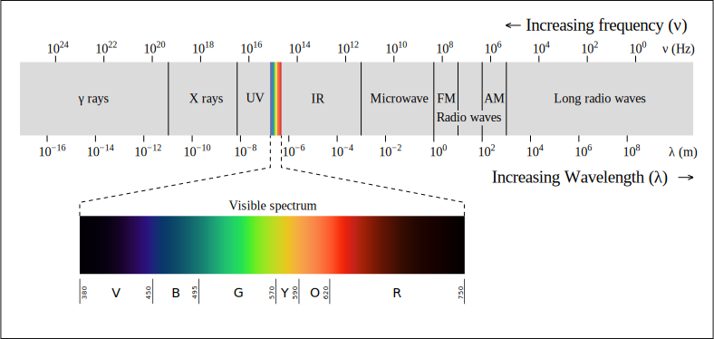
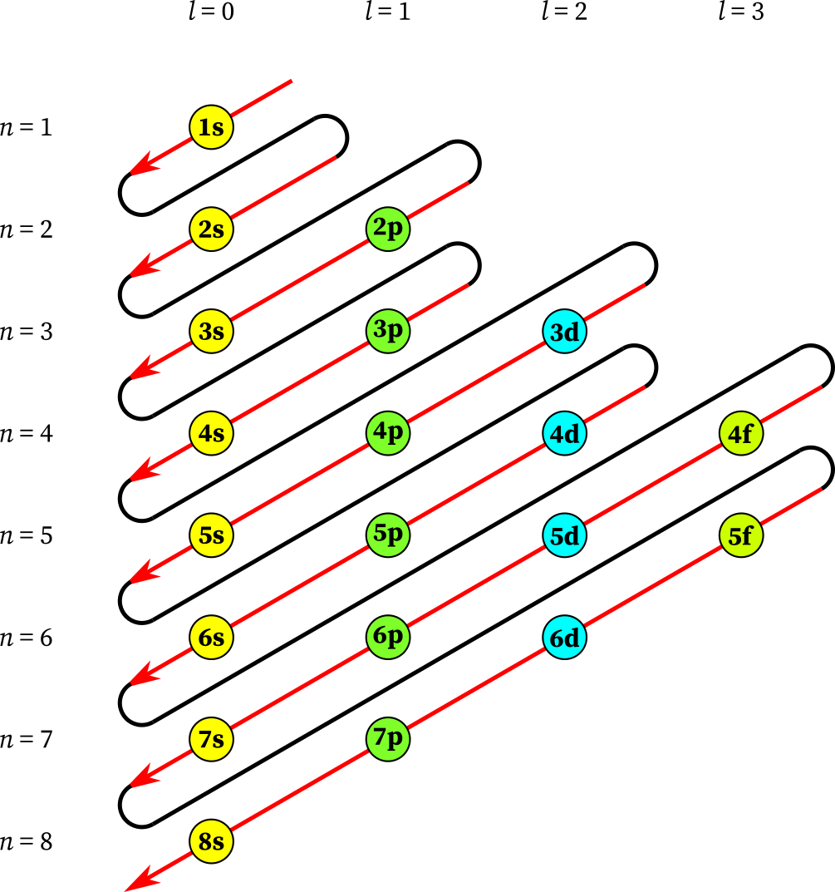

Helpful Information
Constants:
Planck's constant: h = 6.626 · 10-34 J·s
Speed of light: c = 2.998 · 108 m·s-1
Units:
1 eV = 1.602 · 10-19 J
1 Hz = 1 s-1
Electromagnetic Spectrum

Source: Philip Ronan, CC BY-SA 2.5, via Wikimedia Commons | (Original image)
Hints
Question 7Show
The arrangement of electrons in atomic energy levels is normally determined by the Madelung rules:

Source: ChemistryGod | (Original article)
Question 8Show
Use the information available in this help menu (e.g. constants) to determine the equation needed.
Question 9 interactive spectraHide
Question 9cShow
Make sure that you have accounted for all the lines in the Paschen series!
Question 10Show
It is possible that you have already learned the relationship between the quantum number n and the energy of a level.
Question 13aShow
Hint for determining what a "radial" and "angular" node look like: the 2s atomic orbital (but not the 1s orbital) contains a radial node. The 3p and 3d atomic orbitals (but not the 3s orbital) contain angular nodes. You can view all these orbitals in Simulation C.